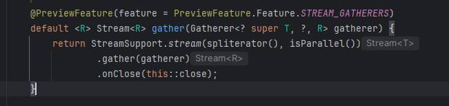

Les nouveautés Java 22 et Java 23
Contenu - Parcourir les features et les previews de Java 22 et Java 23
Motivation - Découvrir les nouveautés, les appliquées sur nos projets

Objectifs
JAVA 22
JEP 447 - Statements before super
JEP 456 - Unnamed Variables & Patterns
JEP 459 - String Templates
JEP 457 - Class-File API
JAVA 23
JEP 455 - Primitive Types in Patterns, instanceof, and switch
JEP 467 - Markdown Documentation Comments
JEP 473 - Stream Gatherers
ET JAVA 24 ?
JEP 447 Statements before super (preview)
Java 21 et inférieur :
Avant
private String marque;
public Voiture(String marque) {
super();
if (marque == null || marque.isEmpty()) {
throw new IllegalArgumentException("La marque ne peut pas être nulle ou vide");
}
this.marque = marque;
System.out.println("Une voiture de la marque " + marque + " est créée");
}Java 22 avec la JEP 447 preview :
La JEP 447 est une fonctionnalité en preview qui autorise des instructions dans le corps d’un constructeur Java, avant l’appel du constructeur.
Avec la JEP447
public Voiture(String marque) {
if (marque == null || marque.isEmpty()) {
throw new IllegalArgumentException("La marque ne peut pas être nulle ou vide");
}
super();
this.marque = marque;
System.out.println("Une voiture de la marque " + marque + " est créée");
}Conlusion
La validation des arguments ne nécessite plus l’utilation de méthodes auxiliaires
Les variables d’instance de la classe enfant ne sont pas utilisées avant que super() soit appelé.
Les champs et méthodes hérités du parent ne sont accessibles qu'après son initialisation.
On peut continuer à mettre notre super() avant des instructions
JEP 456 – Unnamed Variables & Patterns
permet d’utiliser _ comme pattern ou variable anonyme
List<String> names = List.of("Thomas", "nicolas", "alice", "gérard");
int count = 0;
for(String name: names){
count++;
}
System.out.println(" le compte est de : " + count); List<String> names = List.of("Thomas", "nicolas", "alice", "gérard");
int count = 0;
for(String _: names){
count++;
}
System.out.println(" le compte est de : " + count);
} try {
Connection connect = DriverManager.getConnection("localhost", "onepoint", "free");
} catch (SQLException sql) {
System.out.println("ce n'est pas free");
} try {
Connection _ = DriverManager.getConnection("localhost", "onepoint", "free");
} catch (SQLException sql) {
System.out.println("ce n'est pas free");
}Introduit en preview avec le JDK 21, cette fonctionnalité est finalisée sans modifications dans le JDK 22.
Lisibilité améliorée en supprimant les variables inutiles.
La variable ne rentre pas dans le scop.
Réduction des avertissements de variables non utilisées lors de la compilations.
Meilleure gestion du pattern matching, lorsque certains éléments du modèle ne sont pas pertinents.
Réduction de la charge cognitive pour les développeurs en éliminant les variables sans intérêt.
JEP 457 – Class-File API (Preview)
Objectifs :
API standard pour manipuler les fichiers de classe Java
directement dans le JDK
permettant de parser, générer, et transformer les fichiers
Avant la Class-File Api de Java 22
librairie existantes : ASM, BCEL, et Javassist
contraintes : attendre une mise à jour de ces librairie à chaque nouvelle version de java
Avantage
Fournir une API stable
Assurer la compatibilité entre l’API et les nouvelles versions de Java, en éliminant la dépendance à des bibliothèques tierces (comme ASM)
Évolution avec le JDK : Comme le format de fichier de classe évolue à chaque nouvelle version de Java, l’API Class-File évoluera également..
Rendre la manipulation des fichiers de classe plus sûre en intégrant cette fonctionnalité au JDK lui-même.
JEP 465 String Templates (3eme preview)
Interpolation de chaîne de carractère réduisant la complexité de la syntaxe comparée aux utilisations traditionnelles.
améliorer la sécurité en validant les chaînes dynamiques destinées à des systèmes tiers, comme SQL, JSON ou HTML.
STR est un template processor, défini par java, inclus dans la JDK
String name = "Joan";
String info = STR."My name is \{name}";
System.out.println(info); // "My name is Joan"Avantage
Rend la lecture du code lisible.
Sécurisant, en offrant des mécanismes de validation automatique (comme l’échappement des caractères spéciaux pour SQL ou HTML).
STR."SELECT * FROM users WHERE name = :name AND age > :age"Simplification de la composition de chaînes : Cela permet d’inclure facilement des valeurs calculées à l’exécution dans des chaînes de caractères.
Lisibilité améliorée : La syntaxe permet de mélanger facilement texte et expressions tout en maintenant la clarté du code.
Sécurité accrue : En permettant la validation et la transformation des chaînes, cette fonctionnalité aide à prévenir des vulnérabilités telles que les injections SQL.
Flexibilité : Les bibliothèques Java peuvent définir des syntaxes de formatage spécifiques pour ces modèles.
Interaction avec d’autres langages : Elle simplifie l’utilisation d’APIs qui attendent des chaînes écrites dans des langages non Java, comme SQL, XML ou JSON.
Création de valeurs non chaîne : La possibilité de créer directement des objets à partir de texte structuré et d’expressions sans passer par une chaîne intermédiaire.
Et pour les DATES ?
Correction des problèmes liés à la manipulation des fuseaux horaires
Amélioration de la robustesse et la consistance de la gestion des dates/heures
JEP 467 – Markdown Documentation Comments
Pourquoi ?
L’HTML est désormais considéré comme fastidieux à écrire et difficile à lire.
Les balises JavaDoc en ligne, comme {@link} et {@code}, sont pas forcément intuitif.
Markdown propose un format plus simple et plus lisible pour les constructions courantes (les paragraphes, les listes, les liens).
Faciliter l’écriture et la lecture des commentaires JavaDoc en permettant l’utilisation de la syntaxe Markdown.
Maintenir la compatibilité avec les balises JavaDoc existantes et les éléments HTML.
Étendre l’API du Compiler pour gérer le Markdown dans la documentation.
/**
* Calcule la somme de deux nombres.
*
* @param a Le premier nombre.
* @param b Le deuxième nombre.
* @return La somme des deux nombres.
* @throws IllegalArgumentException Si l'un des nombres est nul.
*/
public int add(int a, int b) {
if (a == null || b == null) {
throw new IllegalArgumentException("Les nombres ne peuvent pas être nuls.");
}
return a + b;
}/// Calcule la somme de deux nombres.
///
/// # Paramètres
/// * `a` Le premier nombre.
/// * `b` Le deuxième nombre.
///
/// # Retour
/// La somme des deux nombres.
///
/// # Exceptions
/// * `IllegalArgumentException` Si l'un des nombres est nul.
///
/// ## Exemple
/// ```java
/// add(3, 4); // Renvoie 7
/// ```
///
/// @implSpec
/// Cette méthode vérifie que les deux nombres ne sont pas nuls avant de les additionner.
public int add(Integer a, Integer b) {
if (a == null || b == null) {
throw new IllegalArgumentException("Les nombres ne peuvent pas être nuls.");
}
return a + b;
}Lisibilité améliorée : Markdown est plus simple à lire directement dans le code source.
Moins de balises techniques : <p>, <ul>, <li>, et les autres balises HTML sont remplacées par une syntaxe beaucoup plus concise.
Flexibilité : il permet tout de même d’inclure du HTML pour des structures que Markdown ne prend pas en charge nativement.
/// Exemple :
///
/// /**
/// * Hello World !
/// */
/// public class HelloWorld { }GATHERER
LES STREAMS :
Java utils stream
les streams sont des interface
il peut y avoir plusieurs implémentations, même si dans la plus-pars des cas on utilisera java utils stream
Deux type d opérations
intermediaire (filter, map…)
opération terminal (anymatch, findFirst, collect, count…)
Gatherer
Gatherer → C’est une API, qui permet de définir n’importe quel opération intermediaire

Description
Gatherer<String, ?, String>
la methode gather prends en parametre un gatherer
Gatherer ⇒ type generique, qui possède 3 parametres
Gatherer.of ⇒ permet de creer un gatherer
notre opération intermediaire va pouvoir conserver un état, donc prendre des décisions en fonction de ce qu’il c’est passé avant ou après
Description Gatherer.of
Gatherer.of() utilises 4 fonctions
initializer permet de creer un état en fournissant un supplier (fonction qui permet de créer cet état)
integrator reçoit cet état, donc il peut changer l' état pour X raisons
combiner si je fais des calculs en parallèle , il faut étre capable de combiner des états pour retourner un état ( si j’ai plusieurs états sur differents threads, comment les faire correspondre à un seul état (le combiner ça peut etre la concatenation des listes))
finisher prends des états restant, et peut nous permettre de faire des opérations pour envoyer ces etats restants
JEP 488 : Primitive Types in Patterns, instanceof, and switch
Pour le switch
public String check(Object o) {
return switch(o) {
case Integer i -> "C'est un entier";
case String s -> "C'est une chaîne";
case Car c -> "C'est un objet Car";
default -> "Je ne sais pas ce que c'est";
};
}Instance of
L’opérateur instanceof est utilisé pour vérifier si une valeur appartient à un certain type.
if (obj instanceof Integer value) {
return value + value;
}En Java 23, les types primitifs peuvent aussi être utilisés avec le pattern matching dans instanceof (int float boolean…)
if (obj instanceof int) {
return "C'est un entier primitif";
}Dans les switch, vous pouvez également utiliser des types primitifs comme boolean, float, double, long :
switch (user.isLoggedIn()) {
case true -> user.id();
case false -> -1;
}Pattern Matching avec les Records
Les records sont supportés par le pattern matching : Java effectuera automatiquement la correspondance des champs d’un record sans avoir besoin d’extraire les valeurs explicitement.
record Position(int xCoordinate, int yCoordinate) {}
void printSum(Object obj) {
if (obj instanceof Position(int xCoordinate, int yCoordinate)) {
System.out.println(xCoordinate + yCoordinate);
}
}Conlusion
Des fonctionnalités puissantes
La prise en charge des types primitifs,
La simplification du code
Réduction des risques d’erreurs de type grâce à un casting implicite.